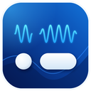
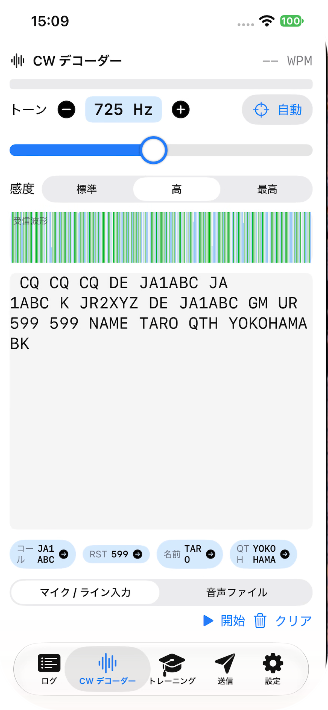
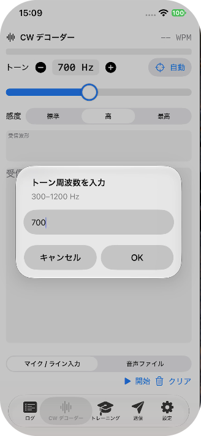
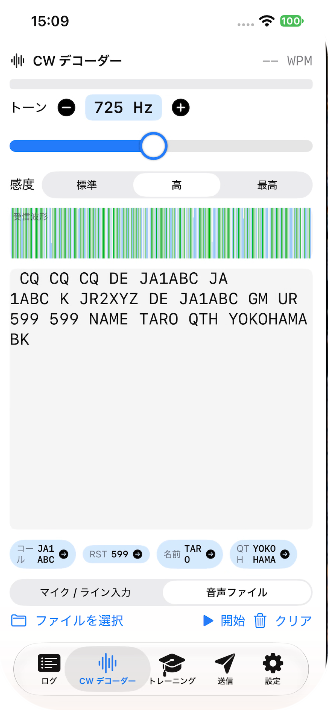

DitLog をご利用いただきありがとうございます。CW（モールス信号）をリアルタイムに解読するアプリです。よくある質問と使い方をまとめました。
デコーダーは設定したトーン周波数の前後（約 ±50Hz）の音だけを拾います。受信音のピッチと合っていないと、文字がほとんど出ません。



静かな環境や空間越しの弱い音では、雑音を拾って誤検出することがあります。もっとも安定するのは、無線機の音声をオーディオインターフェイスやライン入力で直接取り込む方法です。内蔵マイクを使う場合は、スピーカーに近づける・音量を上げるなどして S/N を高めてください。余計な文字が多いときは「感度」を下げ、トーンを「自動」で受信音に合わせてください。
まずトーンを受信音に合わせてください。CW が鳴っている間に「自動」を押すのが簡単です。それでも出ない場合は「感度」を「高」または「最高」に上げ、スマートフォンをスピーカーに近づけるか無線機の音量を上げてください。
入力を「音声ファイル」に切り替え、「ファイルを選択」から WAV / MP3 / AIFF などを読み込みます。ファイル全体を解析し、トーン周波数も自動で推定します。
はい。欧文モールスと和文モールスを自動判定して表示します。送信（キーボード→CW）も和文・欧文の両方に対応しています。
受信音を解読するためにマイクを使用します。許可し忘れた場合は、システム設定 → プライバシーとセキュリティ → マイク（iPhone/iPad は 設定 → プライバシー → マイク）で DitLog を有効にしてください。音声は端末内で処理され、録音・送信は行いません。
ログ画面から ADIF 形式で書き出せます。HamLogJP と互換のフィールドに対応しているため、ADIF ファイルを HamLogJP に読み込めます。
「送信」タブで文章を入力すると符号が表示され、「再生」でCW音として鳴らせます。WPM（速度）とトーンはスライダーで調整できます。
「マイク / ライン入力」を選ぶと、入力デバイスのプルダウンが表示されます。使いたいマイクやオーディオIFを選んでください。「更新」ボタンで一覧を再取得できます。
不具合のご報告・ご要望は、メールでお気軽にどうぞ。
メール: genre_pincers_3d@icloud.com
Thank you for using DitLog, a real-time CW (Morse code) decoder. Here are the basics and common questions.
The decoder only listens around the set tone frequency (about ±50 Hz). If it doesn’t match the received pitch, little or no text appears.
In a quiet room or with weak, across-the-room audio, the mic can pick up noise. The most reliable setup is feeding the rig’s audio directly via an audio interface or line input. With the built-in mic, improve the signal-to-noise ratio (move closer to the speaker, raise the volume), lower the Sensitivity if you see many stray characters, and use “Auto” to match the tone to the received pitch.
First match the tone to the received audio — tapping “Auto” while CW is sounding is easiest. If it still doesn’t decode, raise Sensitivity to High or Max, and move the phone closer to the speaker or turn up the rig’s volume.
Switch input to “Sound File”, tap “Choose File”, and load a WAV / MP3 / AIFF. DitLog analyzes the whole clip and auto-estimates the tone frequency.
Yes. It auto-detects international and Japanese (Wabun) Morse. Keyboard-to-CW sending supports both as well.
The mic is used to decode received audio. If you declined by mistake, enable DitLog under System Settings → Privacy & Security → Microphone (iOS: Settings → Privacy → Microphone). Audio is processed on-device and never recorded or transmitted.
Export your contacts as ADIF from the log screen. The fields are compatible with HamLogJP, so the ADIF file imports into it directly.
In the “Send” tab, type text to see the code, then press “Play” to hear it as CW. WPM (speed) and tone are adjustable.
Select “Microphone / Line In” to reveal an input-device menu. Pick your mic or audio interface; use the Refresh button to re-scan.
Bug reports and requests are welcome by email.
Email: genre_pincers_3d@icloud.com